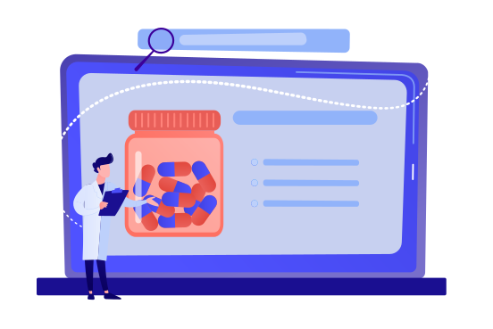

Повна та достовірна інформація про ліки
Опис препаратів містить такі важливі характеристики, як
склад, показання для застосування, дозування,
протипоказання, побічні ефекти, взаємодії з іншими ліками,
термін придатності та інші важливі дані.
Proliki - мій новий улюблений довідник . Все, що мені потрібно, знаходиться тут, і все дуже зручно організовано.